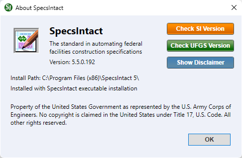

The About SpecsIntact window provides important information about your SpecsIntact installation, including version, installation path, and the type of installation (executable, MSI, or SI Lite). From this window, you can also independently check your SpecsIntact and UFGS Master versions, and view the disclaimer statement outlining the U.S. Army Corps of Engineers license agreement terms.
Checking SI Versions
Automatic
This is a conditional feature that will appear when opening the SpecsIntact Explorer. A message will appear if your SpecsIntact software or Unified Facilities Guide Specifications (UFGS) needs an update. You can then choose to download the latest version from the SpecsIntact Website or ignore it.
If the software version is out-of-date, SpecsIntact will display the Current SpecsIntact Version window. From here, you can select Open SpecsIntact Website to download the current software version, or ignore it without downloading the current version.
If the UFGS Master is out-of-date, SpecsIntact will display the New UFGS Version window. From here, you can select Download the latest UFGS to download the current UFGS Master or ignore it without downloading the current version.
You will not encounter these messages when the software or UFGS Master is up-to-date.
 DoD personnel must download the officially approved software for their particular service. To obtain the latest approved version of SpecsIntact, refer to your internal software portals (e.g., App Portal, Software Center, etc.).
DoD personnel must download the officially approved software for their particular service. To obtain the latest approved version of SpecsIntact, refer to your internal software portals (e.g., App Portal, Software Center, etc.).
 To learn more about the Check for Updates feature, refer to the SpecsIntact Explorer's Setup menu > Options > General tab.
To learn more about the Check for Updates feature, refer to the SpecsIntact Explorer's Setup menu > Options > General tab.
Manual
To manually check to see if you have the current SI Version, refer to the Help menu > About SpecsIntact and click the Check SI Version button.

- Check SI Version button - Opens the Current SpecsIntact Version window to show whether your software is the latest version or if there is a newer version available. When an older version is detected, the Current SpecsIntact Version window opens and offers to Open SpecsIntact Website to download the current version or Ignore without downloading the current version. Disabling this feature is only recommended when your software is pushed or silently installed by your IT Administrator.
- Check UFGS Version button - Opens the Current UFGS Version window to show if your UFGS Master is the most current version available. When an older version is detected, the New UFGS Version window opens and offers to Download the latest UFGS to your default Working Directory's Downloads folder or Ignore without downloading the current version.
- Show Disclaimer button - Opens the disclaimer statement summarizing the terms of SpecsIntact's U.S. Army Corps of Engineers license agreement. The Show Disclaimer button allows you to revisit the Software Disclaimer, even if you had previously chosen to hide it on startup. To restore the option, select Show this disclaimer when the SpecsIntact Explorer starts and click OK.
Standard Windows Commands
 The OK button will execute and save the selections made.
The OK button will execute and save the selections made.